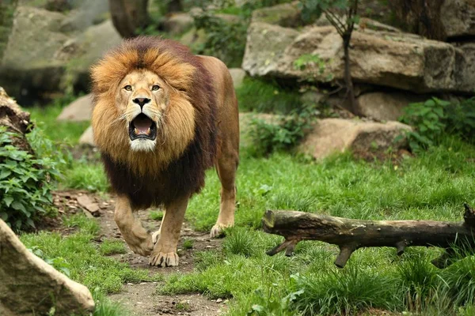

Macan tutul (Latin: Panthera pardus) atau Harimau Bintang adalah salah satu dari empat kucing besar.
Hewan ini dikenal juga dengan sebutan harimau dahan karena kemampuannya memanjat.
Pada mulanya, orang berpikiran bahwa macan tutul adalah hibrida dari singa dan harimau,
sehingga muncul nama "leopard" di kalangan peneliti Eropa awal.
Macan tutul berukuran besar, dengan panjang tubuh antara satu sampai dua meter.
Spesies ini pada umumnya memiliki bulu berwarna kuning kecokelatan dengan bintik-bintik berwarna hitam.
Bintik hitam di kepalanya berukuran lebih kecil.
Macan tutul betina serupa, dan berukuran lebih kecil dari jantan.
Daerah sebaran macan tutul adalah di benua Asia dan Afrika.
Spesies ini sempat dianggap memiliki banyak anak jenis (lebih dari 30 subspesies) yang ditemukan di segala macam habitat,
mulai dari hutan tropis, gurun, savanah, pegunungan dan daerah permukiman.
Macan Kumbang
Macan kumbang (bahasa Inggris: Black panther)
adalah istilah untuk ragam melanisme rambut yang ditemukan pada kucing besar jenis macan tutul (Panthera pardus) dan jaguar (Panthera onca).
Macan kumbang dari kedua jenis hewan ini memiliki pigmen hitam yang berlebih, namun ciri khas berupa tutulnya masih bisa terlihat.
Macan kumbang kebanyakan ditemukan di daerah hutan tropis. Melanisme yang ditemukan pada macan kumbang disebabkan oleh gen resesif di macan tutul.
Macan kumbang dari jenis macan tutul pertama kali tercatat oleh bangsa Eropa di abad ke-18 M.
Macan kumbang dianggap mudah ditemukan di wilayah Semenanjung Malaka dan Jawa,
namun terdapat juga penemuan hewan ini di kawasan Afrika Timur dan Asia Selatan.
Berdasarkan catatan dari pemotretan kamera tersembunyi,
macan kumbang kebanyakan ditemukan di daerah hutan tropis dan subtropis basah berdaun lebar.
Harimau Sumatra
Harimau sumatra adalah populasi Panthera tigris sondaica yang mendiami pulau Sumatra,
Indonesia dan satu-satunya anggota subspesies harimau sunda yang masih bertahan hidup hingga saat ini.
Ia termasuk dalam klasifikasi satwa kritis yang terancam punah (critically endangered) dalam daftar merah spesies terancam yang dirilis Lembaga Konservasi Dunia IUCN.
Populasi liar diperkirakan antara 400-500 ekor, terutama hidup di Pegunungan Bukit Barisan jama sejarah taman-taman nasional di Sumatra jaman pra-sejarah.
Uji genetik mutakhir telah mengungkapkan tanda-tanda genetik yang unik, yang menandakan bahwa subspesies ini mungkin berkembang menjadi spesies terpisah, bila berhasil lestari.
Penghancuran habitat merupakan ancaman terbesar terhadap populasi saat ini. Pembalakan tetap berlangsung bahkan di taman nasional yang seharusnya dilindungi.
Tercatat 66 ekor harimau sumatra terbunuh antara tahun 1998 dan 2000.
Harimau Benggala
Harimau benggala (Latin: Panthera tigris tigris, sebelumnya Panthera tigris bengalensis) adalah subspesies harimau di India, Bangladesh, Nepal, dan Bhutan.
Menurut World Wide Fund for Nature, terdapat sekitar 2.100 harimau benggala di alam bebas, dengan 1.411 di antaranya berada di India, 200 di Bangladesh, 150 di Nepal,
dan 100 di Bhutan.
Harimau tiba di anak benua India sekitar 12.000 tahun yang lalu. Populasi harimau India diperkirakan sekitar 1.760-1909 individual pada tahun 2010.
Pada tahun 2014, dikabarkan bahwa populasi telah meningkat sekitar 2.226 individual. Sekitar 440 harimau diperkirakan di Bangladesh, 163 - 253 harimau di Nepal dan 103
harimau di Bhutan.
Di antara kucing liar besar yang hidup saat ini Harimau benggala merupakan yang terkemuka. Oleh karena itu,
ia dianggap termasuk megafauna karismatik dunia. Harimau benggala merupakan hewan nasional dari kedua negara India dan Bangladesh.
Harimau Siberia
Harimau siberia (Latin: Panthera tigris altaica) adalah subspesies harimau yang habitatnya berada di wilayah Rusia dan berstatus dilindungi.
Harimau siberia dianggap sebagai subspesies terbesar dari enam subspesies harimau.
Harimau siberia adalah hewan yang terancam punah.
Kebanyakan hidup di sebuah wilayah kecil di sebelah selatan Timur Jauh Rusia (kawasan Amur-Ussuri di Primorye dan Khabarovsk)
Harimau Siberia (Panthera Tigris Altaica) dikenal juga dengan sebutan harimau amur dengan tubuh terbesar di dunia.
Menurut data National Geographic, panjang mereka bisa mencapai 3,2 meter dan berat 300 kg
Singa Afrika

Singa (Sanskerta: Siṃha, atau nama ilmiahnya Panthera leo) adalah spesies hewan dari keluarga felidae atau keluarga kucing.
Singa berada di benua Afrika dan sebagian di wilayah India. Singa merupakan hewan yang hidup berkelompok. Biasanya terdiri dari seekor jantan &
banyak betina. Kelompok ini menjaga daerah kekuasaannya. Umur singa antara 10 sampai 15 tahun di alam bebas, tetapi dalam penangkaran memungkinkan
lebih dari 20 tahun. Singa yang lebih muda akan merebut kepemimpinan dari singa yang lebih tua. Kebanyakan singa yang lebih muda akan memakan anak
singa dari pemimpin sebelumnya.
Singa betina jauh lebih aktif dalam berburu, sedangkan singa jantan lebih santai bersikap menunggu &
meminta jatah dari hasil buruan para betinanya. Singa jantan dipercaya lebih unggul dan perkasa dibandingkan
dengan kucing besar lainnya, tetapi kelemahan singa ialah tidak bisa memanjat pohon sebagus kucing-kucing besar lainnya.
Singa jantan ditumbuhi bulu tebal di sekitar tengkuknya, hal ini lebih menguntungkan untuk melindungi tengkuknya,
terutama dalam perkelahian bebas antara kucing besar yang cenderung menerkam tengkuk untuk melumpuhkan musuhnya.
Cheetah
Citah atau Cheetah (Sanskerta: chitraka, berarti "berbintik", bahasa Inggris: cheetah, Latin: Acinonyx jubatus) adalah anggota keluarga kucing (Felidae)
yang berburu mangsa dengan menggunakan kecepatan dan bukan taktik mengendap-endap atau bergerombol. Hewan ini adalah hewan yang tercepat di antara
hewan darat dan dapat mencapai kecepatan 110 km/jam dalam waktu singkat sampai 460 m, dengan akselerasi 0–100 km/jam dalam waktu 3,5 detik, lebih cepat
dari beberapa mobil balap. Konon, selama bertahun-tahun citah hanya dikenal sebagai cerita hantu. Menurut cerita, binatang pemangsa besar dengan garis-garis
mirip harimau pada tubuhnya ini sering membawa kabur orang-orang yang berada di perbatasan Mozambik. Penduduk di sana sering memberi julukan citah dengan "magwa".
Puma Concolor
Puma (Puma concolor) atau cougar atau singa gunung adalah binatang mamalia yang tergolong dalam kelompok kucing besar.
Puma umumnya dijumpai di kawasan benua Amerika. Puma mempunyai genetik yang lebih dekat dengan kucing dibandingkan dengan singa.
Makanan cougar umumnya adalah rusa, tupai, ikan, dan lain-lain.
Cougar menyerang mangsanya dengan menyergap atau menyerang tiba-tiba karena ia memiliki stamina yang tidak terlalu bagus.
Hal tersebut menyebabkan cougar harus menghemat energi, seperti singa dan kucing.